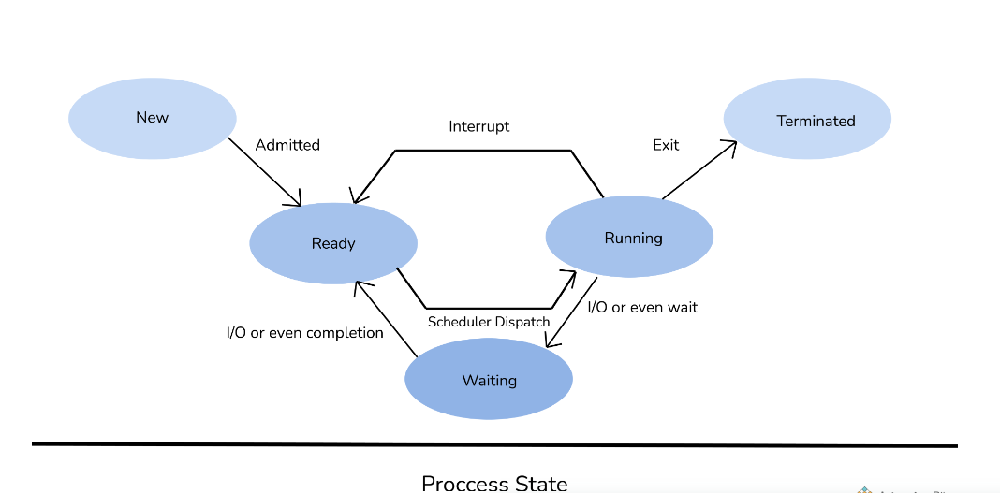
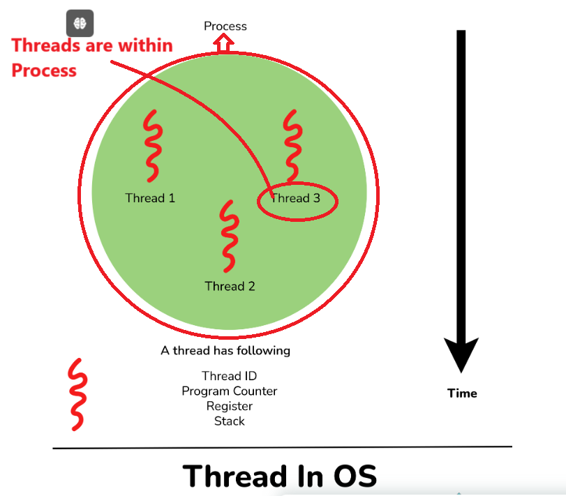
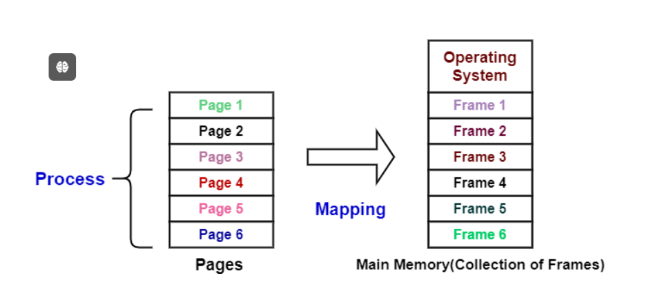
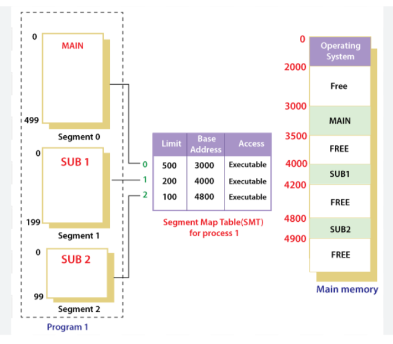

answer: An Operating System (OS) is software that acts as an intermediary between computer hardware and the user. It manages computer hardware resources, provides services for computer programs, and allows users to interact with the system efficiently. The OS performs key functions like managing memory, controlling input and output devices, file handling, and task scheduling.
Types :
1. Batch Operating System.
2. Time-Sharing Operating System:
3. Distributed Operating System
4. Network Operating System
5. Real-Time Operating System (RTOS):
Answer:IPC (Interprocess Communication) is a mechanism that requires the use of resources like a memory that is shared between processes or threads. With IPC, OS allows different processes to communicate with each other. It is simply used for exchanging data between multiple threads in one or more programs or processes. In this mechanism, different processes can communicate with each other with the approval of the OS.
Different IPC Mechanisms:
1. Pipes
2. Semaphore
3. Socket
4. Shared Memory
Answer:
Demand paging is a method that loads pages into memory on demand. This method is mostly used in virtual memory. In this, a page is only brought into memory when a location on that particular page is referenced during execution.
Process synchronization is basically a way to coordinate processes that use shared resources or data. It is very much essential to ensure synchronized execution of cooperating processes so that will maintain data consistency. Its main purpose is to share resources without any interference using mutual exclusion. There are two types of process synchronization:Mention specific challenges (technical, team dynamics, time management, etc.) you encountered. Explain the steps you took to address these challenges, demonstrating your problem-solving skills and resilience.
Independent Process
Cooperative Process
The kernel is basically a computer program usually considered as a central component or module of OS. It is responsible for handling, managing, and controlling all operations of computer systems and hardware. Whenever the system starts, the kernel is loaded first and remains in the main memory. It also acts as an interface between user applications and hardware.
Key features are :
It is responsible for managing all computer resources such as CPU, memory, files, processes, etc.
It facilitates or initiates the interaction between components of hardware and software.
It manages RAM memory so that all running processes and programs can work effectively and efficiently.
It also controls and manages all primary tasks of the OS as well as manages access and use of various peripherals connected to the computer.
Answer:Multitasking: It is a system that allows more efficient use of computer hardware. This system works on more than one task at one time by rapidly switching between various tasks. These systems are also known as time-sharing systems.
Key Features of Multitasking :
It performs more than one task at a time using a single processor.
In this, the number of CPUs is only one.
It allows fast switching among various tasks.
It is less efficient than multiprocessing.
It requires more time to execute tasks as compared to multiprocessing.
Multiprocessing: It is a system that allows multiple or various processors in a computer to process two or more different portions of the same program simultaneously. It is used to complete more work in a shorter period of time.
Key Features of Multiprocessing :
It performs more than one task at a time using multiple processors.
In this, the number of CPUs is more than one.
It allows smooth processing of multiple tasks at once.
It is more efficient than multitasking.
It requires less time for job processing as compared to multitasking.
PROCESS :-A process is an independent program in execution, with its own memory space. It's the basic unit of resource allocation and is isolated from other processes. Each process has its own memory, file handles, and security attributes, and it does not share data directly with other processes.
STATES Different states of the process through which process goes are given below:
New State: In this state, a process is just created.
Running: In this state, the CPU starts working on the process’s instructions.
Waiting: In this state, the process cannot run because it just waits for some event to occur
Ready: In this state, the process has all resources available that are required to run but it waits to get assigned to a processor because CPUs are not working currently on instructions passed by the process.
Terminate: In this state, the process is completed I.e., the process has finished execution.

Thead :-A thread, on the other hand, is the smallest unit of execution within a process. Threads within the same process share memory and resources, allowing them to communicate and interact directly. Because they share the same address space, threads are more lightweight than processes and can be created and managed more efficiently.
Multiple threads running in a process share: Address space, Heap, Static data, Code segments, File descriptors, Global variables, Child processes, Pending alarms, Signals, and signal handlers.
Each thread has its own: Program counter, Registers, Stack, and State.

Answer :-A deadlock is a situation where two or more processes are unable to proceed because each is waiting for resources that the others hold. It’s like a stalemate where no progress can be made because the processes are in a circular waiting state.
Deadlock Conditions
A deadlock can only occur if the following four conditions hold simultaneously (these are known as Coffman conditions):
Mutual Exclusion: At least one resource must be held in a non-sharable mode. Only one process can use the resource at any time.
Hold and Wait: A process holding at least one resource is waiting to acquire additional resources held by other processes.
No Preemption: Resources cannot be forcibly removed from processes holding them until the resource is voluntarily released.
Circular Wait: A closed chain of processes exists, where each process holds at least one resource needed by the next process in the chain.
To overcome deadlock, we can either prevent it from happening, detect and recover from it if it occurs, or avoid it entirely. Here are several methods:
Deadlock Prevention :This approach eliminates one of the four necessary conditions for deadlock, such as requiring processes to request all needed resources at once to avoid hold and wait.
Deadlock Avoidance: This method involves checking resource allocation requests against a predetermined safe state, using algorithms like the Banker’s Algorithm to ensure the system remains in a safe state.
Deadlock Detection and Recovery:This strategy allows deadlocks to occur but detects them through monitoring algorithms, and recovers by terminating processes or preempting resources from certain processes.
Combined Approach: A mix of prevention, avoidance, and detection/recovery techniques is often implemented to balance system performance and reliability based on specific requirements.
Answer: It is generally a situation where the CPU performs less productive work and more swapping or paging work. It spends more time swapping or paging activities rather than its execution. By evaluating the level of CPU utilization, a system can detect thrashing. It occurs when the process does not have enough pages due to which the page-fault rate is increased. It inhibits much application-level processing that causes computer performance to degrade or collapse.
Answer:When two or more process share same memory then there occurs a race condition in which both the procces wants to reach the memory first and this is called as race condition and semaphore is used to avoid race condition.
SEMAPHORE :-A semaphore is a synchronization tool used in concurrent programming to control access to shared resources and prevent race conditions. It works by using a counter to manage the number of processes or threads that can access a resource at the same time. When a thread wants to access a resource, it decrements the semaphore counter. If the counter is positive, access is granted; if it’s zero or negative, the thread must wait. Once the resource is released, the counter is incremented, allowing other waiting threads to access it. This ensures orderly, exclusive access to shared resources, preventing conflicts like race conditions.
MUTEX :-A mutex (short for "mutual exclusion") is a synchronization primitive used to control access to a shared resource by multiple threads or processes. Its primary function is to ensure exclusive access to a resource, meaning only one thread can access the resource at any given time, preventing conflicts and maintaining data consistency.
How a Mutex Works:
When a thread wants to access a shared resource, it locks the mutex.
While the mutex is locked, other threads trying to lock it are blocked and must wait until the mutex is unlocked.
Once the thread finishes using the resource, it unlocks the mutex, allowing other threads to proceed.
There are basically two atomic operations that are possible:
Wait()
Signal()
Answer:When we use Priority Scheduling or Shortest Job First Scheduling, Starvation can happen, This algorithm is mostly used in CPU schedulers
Starvation :-It is generally a problem that usually occurs when a process has not been able to get the required resources it needs for progress with its execution for a long period of time. In this condition, low priority processes get blocked and only high priority processes proceed towards completion because of which low priority processes suffer from lack of resources.
Aging :- It is a technique that is used to overcome the situation or problem of starvation. It simply increases the priority of processes that wait in the system for resources for a long period of time. It is considered the best technique to resolve the problem of starvation as it adds an aging factor to the priority of each and every request by various processes for resources. It also ensures that low-level queue jobs or processes complete their execution.
fragmentation
Fragmentation refers to the inefficient use of memory that occurs when memory is allocated and deallocated in a way that leaves small, unusable gaps in memory. It primarily occurs in two forms: internal fragmentation and external fragmentation.
Internal Fragmentation:
Definition :- Internal fragmentation occurs when memory blocks are allocated but not fully used, leading to wasted space within the allocated memory. This is particularly relevant in the context of paging, where fixed-size pages can lead to unused space within a page.
Cause :-This typically happens with fixed-size memory allocation strategies, such as paging, where the allocated memory (page) is larger than the actual data being stored.
Example :-If a page size is 4 KB and a process only needs 3 KB, the remaining 1 KB is wasted and cannot be used by other processes.

External Fragmentation:
Definition :- External fragmentation occurs when free memory is split into small, non-contiguous blocks scattered throughout the memory, making it difficult to allocate larger contiguous blocks of memory. This is especially notable in the context of segmentation, where variable-sized segments can lead to gaps between used memory.
Cause :-This often results from variable-sized memory allocation strategies, such as segmentation, where processes are allocated segments of different sizes and deallocated over time, leading to gaps between used segments.
Example :- If a program allocates 10 KB, then another program allocates 20 KB, and the first program deallocates its memory, there might be a 10 KB free block, but it is not usable for a process that needs 15 KB because the free block is not contiguous.

PAGING
Paging is a memory management technique where the physical memory is divided into fixed-size blocks called frames, and the logical memory (process memory) is divided into blocks of the same size called pages.
The Frame has the same size as that of a Page. A frame is basically a place where a (logical) page can be (physically) placed.
Pages of a process are brought into the main memory only when there is a requirement otherwise they reside in the secondary storage.
One page of a process is mainly stored in one of the frames of the memory. Also, the pages can be stored at different locations of the memory but always the main priority is to find contiguous frames.
Advantages: Paging eliminates external fragmentation, as each page is stored in any available frame without needing contiguous memory.

Segmentation
Segmentation divides memory into variable-sized segments based on the logical structure of a program (e.g., code, data, stack). Each segment has its own base and limit, representing its starting address and length.
HOW IT WORK : operating system maintains a segment table for each process, mapping logical segment addresses to physical addresses in memory.
Advantages:Segmentation aligns better with how programmers think about memory (code, data, stack) and supports protection and sharing more naturally than paging.

What do you mean by Sockets in OS?
The socket in OS is generally referred to as an endpoint for IPC (Interprocess Communication). Here, the endpoint is referred to as a combination of an IP address and port number. Sockets are used to make it easy for software developers to create network-enabled programs. It also allows communication or exchange of information between two different processes on the same or different machines. It is mostly used in client-server-based systems.
TYPES :-
Stream Sockets , Datagram Sockets , Raw Sockets.
What is virtual memory?
It is a memory management technique feature of OS that creates the illusion to users of a very large (main) memory. It is simply space where a greater number of programs can be stored by themselves in the form of pages. It enables us to increase the use of physical memory by using a disk and also allows us to have memory protection. It can be managed in two common ways by OS i.e., paging and segmentation. It acts as temporary storage that can be used along with RAM for computer processes.
What is Context Switching?
Context switching is basically a process of saving the context of one process and loading the context of another process. It is one of the cost-effective and time-saving measures executed by CPU the because it allows multiple processes to share a single CPU. Therefore, it is considered an important part of a modern OS. This technique is used by OS to switch a process from one state to another i.e., from running state to ready state. It also allows a single CPU to handle and control various different processes or threads without even the need for additional resources.
What is a time-sharing system?
It is a system that allows more than one user to access the resources of a particular system in many locations. In simple words, it performs multiple tasks on a single processor or CPU. As the name suggests, it means to share time into multiple slots in several processes. It also allows different users from different locations to use a particular computer system at the same time therefore it is considered one of the important types of OS.
What is RAID structure in OS?
RAID (Redundant Arrays of Independent Disks) is a method used to store data on Multiple hard disks therefore it is considered as data storage virtualization technology that combines multiple hard disks. It simply balances data protection, system performance, storage space, etc. It is used to improve the overall performance and reliability of data storage. It also increases the storage capacity of the system and its main purpose is to achieve data redundancy to reduce data loss.
What is a bootstrap program in OS?
It is generally a program that initializes OS during startup i.e., first code that is executed whenever computer system startups. OS is loaded through a bootstrapping process or program commonly known as booting. Overall OS only depends on the bootstrap program to perform and work correctly. It is fully stored in boot blocks at a fixed location on the disk. It also locates the kernel and loads it into the main memory after which the program starts its execution.
What is a Pipe and when it is used?
The pipe is generally a connection among two or more processes that are interrelated to each other. It is a mechanism that is used for inter-process communication using message passing. One can easily send information such as the output of one program process to another program process using a pipe. It can be used when two processes want to communicate one-way i.e., inter-process communication (IPC).
DEED LOVK MISSINgKEEP GOING!! JUST ONE LAST STEP..